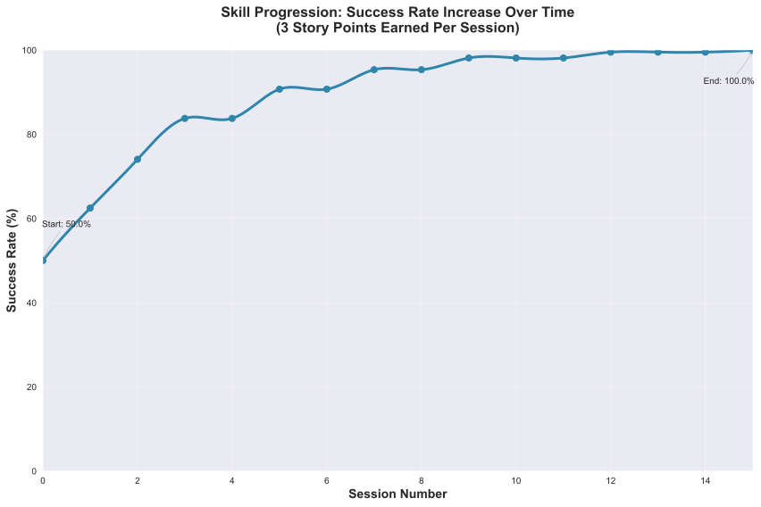

3. Character Mechanics
This document becomes the GM's primary in-game reference for how a character functions mechanically. It answers the question, "What can a character do and what is their current state?"
3.1. Skills
A skill represents anything a character can do or be. This includes physical abilities like strength or swimming, and mental aptitudes such as various forms of intelligence. Skills are trainable, meaning a character's proficiency can improve over time. Skills have a name, denoting the skill's scope, and a numerical value, indicating proficiency.
3.1.1. Skill Naming and Hierarchy
Skills are named to reflect their scope and specialization. Skills are organized into a hierarchical tree with multiple root nodes, so general skill can have more specific versions. The naming format for specific skills uses parentheses. For example, a general skill like Piloting can have a more specific version like Piloting (Starship). This can extend further, such as Piloting (Starship) (Freighter). The game master determines the specific skills that exist in a game world, although players can suggest new skills, or new specializations of skills, as long as the GM agrees.
When a character attempts a task requiring a specific skill the character does not possess, the character can use a more general skill from the same hierarchy. However, using a general skill for a more specific task incurs a disadvantage. A character using a general skill for a more specific skill suffers a -1 disadvantage for each level of specialization their more general skill is missing. For example, using Piloting for a Piloting (Starship) task incurs a -1 disadvantage, while using Piloting for a Piloting (Starship) (Freighter) task incurs a -2 disadvantage. Rule of thumb: count the number of parenthesized expressions to see what the disadvantage should be.
Kaelen, a hotshot starship pilot, finds himself at the controls of a borrowed ground-effect vehicle. The hovercraft bucks and sputters, feeling clumsy and alien compared to the sleek interceptors he's used to. The GM says, "Okay Kaelen, the console is unfamiliar, and this thing handles nothing like a starship. Your Piloting (Starship) skill of 14 won't help you here. You'll have to use your general Piloting skill, which defaults to 9. Since you're using a general skill for a specialized task, you'll take a -1 penalty. Your target number to get this thing moving without crashing is 8."
GM-Provided Skill Lists: The Game Master is responsible for providing players with a specific list of skills that are available in their game world. This list serves as the canonical set of skills that can be used for skill checks. Players must always use the most specific applicable skill from this list when making skill checks. For example, if a GM's list includes both Investigation and Investigation (Forensics), and a character is examining a crime scene, they must use Investigation (Forensics) rather than the more general Investigation skill.
3.1.2. Skill Proficiency Value
Each skill has a numerical value that indicates the character's level of proficiency. A higher number signifies greater ability. The default value for any general, non-specific skill (such as Strength or Piloting) is 9. The default value of any specific skill (such as Strength (Lifting) or Piloting (Starship)) is considered undefined if it is not in the character sheet.
For the purposes of using such undefined specific skills, these skills relay up to more general skills for their value (at a disadvantage per level up to the general skill) as described in the previous section.
During character creation, players can increase skills above the default value of 9 using their character points.
The following table provides a qualitative evaluation of skill levels based on the probability of success for tasks of average difficulty:
| Skill Range | Probability Range (≤ Value) | Qualitative Level | In-Game Meaning |
|---|---|---|---|
| 3-5 | 0.46% - 4.63% | Hopeless | Character has virtually no chance of success. Tasks feel impossible. |
| 6-7 | 9.26% - 16.20% | Very Poor | Minimal capability. Success requires extraordinary luck. |
| 8 | 25.93% | Poor | Below average capability. Frequent failures even on simple tasks. |
| 9-10 | 37.50% - 50.00% | Average | Baseline human capability. Modest chance of success on routine tasks. |
| 11-12 | 62.50% - 74.07% | Good | Reliable performance. Succeeds more often than fails on standard tasks. |
| 13-14 | 83.80% - 90.74% | Very Good | Skilled practitioner. Rarely fails at standard tasks. |
| 15-16 | 95.37% - 98.15% | Excellent | Highly specialized mastery. Failure is exceptional. |
| 17 | 99.54% | Masterful | Virtually flawless. Represents pinnacle of human capability. |
| 18 | 100.00% | Legendary | Automatic success. Character cannot fail under normal conditions. |
Note that these probabilities and qualitative levels apply to tasks of average difficulty. To map tasks of higher or lower difficulty onto this table, to figure out how a character's effective skill measures up to the task at hand, just add or subtract the difficulty modifier from their skill and only then compare it to this table. For instance, if a character has a skill of 23, but the difficulty modifier is -10, then relative to the task at hand their skill would be 13, or Very Good.
3.2. Traits
A trait is a passive effect, representng inherent advantages or disadvantages a character possesses. Traits typically modify a character's skills, and traits are established during character creation. Traits cannot be trained or improved.
3.2.1. Trait Value
Each non-Special trait is inherently either positive (a boost) or negative (a hindrance). During character creation, the player chooses a numerical value for the trait, which determines both the trait's effect on skills and its character point cost. For positive traits, the player chooses a positive value (e.g., from +1 to +5) and spends that many character points. For negative traits, the player chooses a negative value (e.g., from -1 to -5) and gains that many character points.
The value of the trait directly determines the size of its effect in the case of broad and narrow skill-based traits. For example:
-
A player might choose the Photographic Memory trait at +3, spending 3 character points
-
A player might choose the Absent-Minded trait at -2, gaining 2 character points
Special traits, on the other hand, come with fixed costs, as they typically introduce special rules or effects that are not easily dialed up and down linearly like regular traits are.
Warning: Game Masters should be aware that extreme trait values like +5 or -5 represent a 50% swing in success rates, which can have a massive effect on characters. Players are strongly encouraged to talk to their GMs before taking any such extreme traits to ensure they fit the campaign and won't unbalance the game.
3.2.2. How Traits Apply
Each trait is associated with a specific list of skills that it effects. When a trait affects a skill, its effect applies to all skills hierarchically subordinate to that skill.
If multiple traits affect the same skill, only the highest bonus and the highest penalty are applied. This prevents skill values from becoming unbalanced, as bonuses would otherwise stack and quickly become excessive.
Traits are categorized based on how they affect skills. Understanding these categories helps players and Game Masters determine when and how traits apply during gameplay, and these categories should be noted in any trait definition, alongside the skills the category requires the trait to effect.
3.2.2.1. Broad Traits
Broad traits affect one or more top-level general skill categories. These traits have wide-ranging effects across many related skills. For example, a Natural Leader trait might affect the entire Social skill category, providing bonuses to Social (Diplomacy), Social (Command), Social (Intimidation), and any other skills that fall under the Social umbrella.
Broad traits represent fundamental aspects of a character's personality or physiology that affect large areas of their capabilities. They're typically more impactful than narrow traits but also more balanced in their effects. Since specific skills are more commonly directly used in skill checks, and Broad traits only effect general skills, Broad traits — as well as general skills themselves — can be thought of as the closest thing in OpenAxiom to traditional character attributes like STR and DEX, but there are mechanical differences.
3.2.2.2. Narrow Traits
Narrow traits affect one or more first-level specialized skills. These traits have more focused effects on specific areas of expertise. For example, Perfect Pitch affects Art (Music) specifically, rather than all Art skills. Similarly, Keen Eyesight might affect Perception (Visual) but not other perception skills.
Narrow traits represent specific talents or limitations that only apply to particular skill areas. They're more specialized than broad traits and typically have more pronounced effects within their limited scope. These are less like character attributes, and more like a character having an inbuilt talent for something or even savant status with it, and/or having been trainted in it since birth.
3.2.2.3. Special Traits
Traits can also be designated as "Special" traits. These traits introduce simple new rules that layer on top of, but do not replace, core game mechanics. Like the way cards in some deck-building games introduce custom rules, Special traits add unique mechanical effects to a character that go beyond simple skill bonuses or penalties. For example, a Second Wind trait might allow a character to recover some health once per session, or a Lucky Charm trait might allow rerolling a failed skill check once per game session.
3.2.2.4. Situational Traits
Situational traits can be broad, or narrow, or special, but only activate under specific conditions defined by the trait. For example, Night Vision is a narrow situational trait that only applies to perception skills when in low-light conditions. Cold Tolerance might be a broad situational trait that affects all physical skills but only in freezing environments. The Game Master determines when situational traits activate based on the narrative circumstances.
Situational traits represent abilities or limitations that only matter in specific contexts. They add flavor and tactical depth to characters without constantly affecting gameplay.
The medical bay is chaos. Emergency lights cast long, dancing shadows as Dr. Aris Thorne prepares for emergency surgery. The GM sets the scene: "Aris, the lights are failing. Your innate Doctor's Composure (+2 to all Medicine) helps you stay calm amidst the panic. However, your Shaky Hands (-3 to Surgery) are a real problem for this delicate work. Luckily, your Night Vision augments (+1 in low-light) allow you to see just enough to operate. Let's calculate your final target number."
- Calculation: 13 (Base Skill) + 2 (Broad Trait) - 3 (Narrow Trait) + 1 (Situational Trait) = 13.
3.2.3. Standard Trait Definition Format
When defining traits, use the following standardized format to ensure clarity and consistency. This format should be used for all traits, whether they are from official trait packs or custom creations.
| Trait Name | Category |
|---|---|
| Skills Affected | [List of skills affected by this trait] |
| CP Cost | [constant CP cost, or CP cost range for non-Special traits] |
| Effect | [Description of the mechanical effect of this trait] |
Example:
| Natural Leader | Broad |
|---|---|
| Skills Affected | Social |
| Effect | Provides a bonus to all social interaction skills. |
Special traits that modify the core rules may have multiple categories:
| Lucky Charm | Broad, Special |
|---|---|
| Skills Affected | All skills |
| Effect | Once per session, the character may reroll any failed skill check. |
3.2.4. Trait Evolution and Modification
Traits represent a character's inherent nature and are generally stable over time. However, they are not completely immutable. Through dedicated effort and significant personal growth, characters can modify their traits over time.
Negative traits can be gradually reduced through story point expenditure, as detailed in the Character Advancement section. This process represents the character's journey of personal growth and resilience as they work to overcome their flaws and hindrances through in-game experiences.
Positive traits, once established, remain fixed and cannot be modified through story point expenditure. They represent core aspects of a character's identity that define who they are at their foundation.
3.2.5. Example Traits
The following examples are designed to showcase the breadth of the trait system, covering physical, mental, and social applications as well as the different mechanical categories.
| Acrobatic Recovery | Special, Situational |
|---|---|
| Skills Affected | Physical (Acrobatics) |
| Effect | When you would be knocked prone from a failed Physical check, you may spend 1 AP to immediately make a Physical (Acrobatics) check. On a success, you land safely on your feet in an adjacent hex. This can only be attempted once per turn. |
| Tactical Acumen | Broad |
|---|---|
| Skills Affected | Combat, Investigation, Perception |
| Effect | Provides a bonus to skill checks related to identifying enemy weaknesses, assessing a crime scene, or noticing environmental details that could be used to one's advantage. |
| Information Broker | Special |
|---|---|
| Skills Affected | Streetwise, Social (Investigation) |
| Effect | Once per session, when in a populated area, the character can make a Streetwise check as an Extended Action (3 turns). On a success, they learn a useful secret related to a person, faction, or location of their choice. |
| Iron Grip | Narrow |
|---|---|
| Skills Affected | Physical (Grip), Physical (Climbing) |
| Effect | Provides a bonus to any skill check made to resist being disarmed or to maintain a grip. |
| Composure | Special, Situational |
|---|---|
| Skills Affected | Social (Deception), Physical (Endurance) |
| Effect | When this character would gain a level on their Mental or Social Harm trackers, they can choose to take a level of Physical Harm instead. This cannot be used if the Physical Harm tracker is already at Level 3 (Wrecked). |
| Otherworldly Charm | Broad, Special |
|---|---|
| Skills Affected | Social |
| Effect | Provides a bonus to all Social checks with a specific category of non-human beings (e.g., aliens, AI - chosen at character creation). However, the character suffers a -2 penalty on all Social checks with a faction that is Hostile to that group. |
3.3. Items
3.3.1. Character Inventory
Characters in OpenAxiom have a simple inventory system. Your best strength-related skill determines the number of inventory slots you have available to carry items. Strength-related skills include Physical (Strength), Physical (Endurance), and any other skills that the Game Master deems appropriate for determining carrying capacity.
Items are categorized into four size classes that determine how they consume inventory slots:
-
Small: These items can be fit two per inventory slot (e.g., a dagger, a book, a small tool).
-
Medium: These items require one inventory slot (e.g., a sword, a backpack, a rope).
-
Large: These items require two inventory slots (e.g., a suit of armor, a large weapon, a chest).
-
Extra Large: These items require multiple players to carry, with each participant using all of their open slots for the duration (e.g., a canoe, a large piece of furniture, a heavy statue).
Other than these size and slot requirements, inventory is very simple. Players can organize their items however they see fit, and the Game Master should generally not concern themselves with tracking exact weights or volumes. The focus is on narrative gameplay rather than detailed inventory management.
Items that are particularly large, bulky, or numerous may require special consideration from the Game Master, but in general, players should be able to carry a reasonable amount of equipment based on their character's physical capabilities.
3.3.2. How Items Affect Characters
The way items affect characters falls into one of three categories, with an additional modifier for situational items:
3.3.2.1. Skill Checks in a Box
The most basic types of items are "skill checks in a box." These items list one or more specific (not general) skills that they grant automatic successes to. This could include beers for Social (Diplomacy) checks in casual settings, bedding for Survival (Wilderness) checks to set up camp, or binoculars for Perception (Visual) checks to spot distant objects. When a character possesses such an item and attempts a relevant skill check, they automatically succeed without rolling dice, but taking the action still uses the usual amount of action points during tactical time.
| Quality Binoculars | Skill Check in a Box |
|---|---|
| Skills Affected | Perception (Visual) |
3.3.2.2. Skill Prerequisite Items
The next level of complexity includes skill prerequisite items. These items are specified as required by a skill to perform that skill effectively. This is usually specified in resource packs, but the ultimate decision is up to the GM. For example, a lockpick set might be required for Physical (Lockpicking) checks, or a computer might be required for Computers (Hacking) checks.
Such prerequisite items are not strictly necessary, but working without them will add a "No tools" penalty, whereas attempting to use a Crafting skill check to jerry-rig the necessary tools, if it succeeds, will result in a "Improvised tools" penalty. The quality of the tools can also effect what penalties apply to the relevant skill check. For more, see the Determining Target Numbers section of the Logic of Action chapter.
| Professional Lockpick Set | Prerequisite |
|---|---|
| Required For | Physical (Lockpicking) |
| Quality | High/Normal/Faulty |
3.3.2.3. Special Items
Finally, there are Special items; much like Special traits, Special items introduce new rules that may include modifying dice outcomes or providing or removing penalties. These items add unique mechanical effects that go beyond simple skill bonuses. Examples might include a lucky charm that allows rerolling failed checks, or a suit of armor that reduces harm tracker penalties. As with Special traits, Game Masters should be cautious about introducing custom Special items, as they can significantly affect game balance.
| Lucky Charm | Special |
|---|---|
| Skills Affected | All skills |
| Effect | Once per session, the character may reroll any failed skill check. |
Other than these officially published Special items, Game Masters should be cautious about introducing custom Special items, as they can significantly affect game balance.
3.3.2.4. Situational Items
Any item can be Situational, similar to traits, in which case their effects only apply under certain conditions defined by the item's description. For example, a raincoat would only provide its benefits in wet weather, or night vision goggles would only function in low-light conditions. The Game Master determines when situational items activate based on the narrative circumstances. A situational item can be any one of the other three types, so the specification of the type in that case is a comma separated list. The format of an item card for a situational item is the same as the format for the item card of the type it is, plus the "situation" row.
| Night Vision Goggles | Situational, Skill Check in a Box |
|---|---|
| Skills Affected | Perception (Visual) |
| Situation | Only functions in low-light conditions. |
3.3.2.5. Lore Items
Lore items are usually Small in size, at max Medium, and don't convey any mechanical advantage. They simply represent items the character should have for their backstory. These are represented in-game only so that it's easier to keep track of them if they're stolen, and to avoid absurd inventories full of lore items.
3.3.2.6. Weapon and Armor Properties
Weapons and armor are Special items that can have additional mechanical properties beyond their basic category. These properties can be added as rows to the item cards.The items are as follows:
-
Required Skill: Weapons have a Required Skill property indicating the minimum skill level needed to use the weapon effectively. If a character's skill level is below this requirement, they must pay additional action points to make attacks with the weapon (see combat rules). For example, a masterwork sword might have "Required Skill: 12" indicating it requires a Combat (Melee) skill of at least 12 to use without penalty.
-
Damage: Weapons also have a Damage property indicating the dice rolled to determine how much harm they inflict. For example, a sword might have "Damage: 2d6" indicating it rolls two six-sided dice for damage.
-
Range: Ranged weapons may have a Range property indicating the distance at which they remain effective. For example, a bow might have "Range: 10" indicating it can effectively target opponents within 10 hexes.
-
Damage Resistance: Armor may have a Damage Resistance property that reduces the amount of harm the wearer takes from attacks. For example, leather armor might have "Damage Resistance: 2" indicating it reduces incoming damage by 2 points.
These properties should be added as rows to the item card format, as shown in the example below:
| Elven Composite Bow | Prerequisite, Special |
|---|---|
| Required For | Combat (Ranged) (Bow) |
| Required Skill | 10 |
| Damage | 1d8 |
| Range | 10 |
| Leather Armor | Special |
|---|---|
| Damage Resistance | 2 |
3.4. Character Status Effects
Characters in OpenAxiom face various forms of harm during their adventures. To track this, every character has three separate harm trackers that represent different aspects of a character's well-being.
3.4.1. Types of Harm Trackers
3.4.1.1. Physical Harm
A character with physical harm suffers penalties to skills requiring bodily coordination, strength, or endurance. The Physical tracker tracks wounds, poison, fatigue, and bodily injury.
Affected General Skills:
-
Combat (all specializations)
-
Physical (all specializations: Strength, Acrobatics, Stealth, etc.)
-
Piloting (all specializations)
-
Survival (all specializations)
-
Any other skills requiring physical exertion or coordination
3.4.1.2. Mental Harm
A character with mental harm suffers penalties to skills requiring concentration, memory, or cognitive processing. The Mental tracker tracks fear, confusion, stress, and psychic damage.
Affected General Skills:
-
Computers (all specializations)
-
Investigation
-
Perception
-
Engineering (all specializations)
-
Medicine (all specializations)
-
Any other skills requiring focused mental effort or problem-solving
3.4.1.3. Social Harm
A character with social harm suffers penalties to skills requiring interpersonal interaction, emotional control, or social awareness. The Social tracker tracks humiliation, loss of face, damaged reputation, and shaken confidence.
Affected General Skills:
-
Social (all specializations: Diplomacy, Deception, Intimidation, etc.)
-
Languages (when used in social contexts)
-
Art (Performance)
-
Streetwise
-
Any other skills requiring social interaction or emotional stability
3.4.2. Harm Tracker Levels and Penalties
Each harm tracker progresses through four distinct levels, with corresponding penalties:
-
Hindered (Level 1): The character experiences minor difficulties that affect their performance. Applies a -1 penalty to all affected skills.
-
Impaired (Level 2): The character suffers noticeable setbacks that significantly impact their capabilities. Applies a -2 penalty to all affected skills.
-
Wrecked (Level 3): The character endures severe trauma that gravely hampers their effectiveness. Applies a -3 penalty to all affected skills.
-
Incapacitated (Level 4): The character is completely unable to function in that way, and cannot take actions requiring that type of effort.
When a harm tracker applies a penalty to a general skill, it also applies to any more specific sub-skills under that general skill. For example, if Physical harm affects Combat, it also affects Combat (Melee) and Combat (Ranged).
3.4.2.1. Least Harmed Principle
When a skill could fall under multiple harm trackers, by default the harm tracker that is least harmed is the one the skill is treated as falling under, but the decision is ultimately up to the GM.
This principle represents how characters compensate for their wounds by leaning more heavily on their other capabilities to still execute a skill. For instance, a character might use Social (Streetwise) to physically intimidate a foe or to mentally recall the layout of a gang's territory, depending on if they are more mentally or physically harmed, respectively. This mechanic reflects the adaptability of characters as they work around their limitations.
Examples of skills that might fall under multiple harm trackers include:
-
Social (Streetwise): Can be used for physical intimidation (Physical) or recalling territorial knowledge (Mental)
-
Physical (Acrobatics): Might be used in social performance (Social) or to mentally calculate trajectories (Mental)
-
Combat (Melee): Could involve social intimidation (Social) or mental tactical planning (Mental)
-
Art (Performance): May require physical dexterity (Physical), mental memorization (Mental), or social engagement (Social)
-
Survival (Tracking): Can involve physical stamina (Physical), mental pattern recognition (Mental), or social knowledge of local customs (Social)
3.4.3. Managing Harm
Harm is typically inflicted by the Game Master as a result of failed rolls, environmental hazards, or narrative consequences. There are two primary methods for recovery from harm:
-
Rest: A character can reduce one harm tracker by one level whenever they get adequate long rest and recuperation, allowing their body, mind, or social standing to heal naturally.
-
Skill Development: When a character spends story points to improve a skill that falls under a particular harm tracker, they can also reduce that harm tracker by one level. This represents the character's growing mastery and resilience in that area of their life. This recovery is a free benefit earned by reaffirming one's capabilities.
3.5. Character Advancement
As characters face trials and adventures, they grow and change. OpenAxiom represents this evolution through Story Points. These points are earned through narrative milestones and can be spent to improve skills, overcome flaws, or even gain new innate talents. This system ensures that character growth is tied directly to the story, rewarding players for engaging with the game world and their character's journey.
3.5.1. Earning Story Points
Story points are awarded by the Game Master at the conclusion of significant plot beats or story moments. These moments might include:
-
Completing a major quest or mission
-
Overcoming a significant challenge or adversary
-
Making a crucial discovery that advances the narrative
-
Resolving a personal character conflict or subplot
-
Contributing significantly to a group's success
The number of story points awarded depends on the importance and difficulty of the accomplished plot beat. A minor milestone might earn 1-2 story points, while a major achievement could earn 5 or more. The Game Master has full discretion in determining both when story points are awarded and how many to give.
As a general guideline, players should expect to receive 3-6 story points per typical game session, depending on the pacing of the story and the number of significant accomplishments. This pace allows for steady character development while maintaining the value of story points as meaningful rewards.
3.5.2. Spending Story Points
Story points can be saved and accumulated over multiple sessions. They do not need to be spent immediately when awarded. Players can choose when to spend their accumulated story points, allowing them to save up for more significant improvements. Players have three options for spending their story points:
3.5.2.1. Improving Existing Skills
Any amount of story points can be applied to skills the character already has. Increasing a skill's value requires more story points as the skill becomes more proficient. Each improvement follows a simple step progression: the first time a skill is improved (when it's initially unlocked) costs 1 story point, the second improvement costs 2 story points, the third costs 3 story points, and so on.
The formula for determining the cost to improve a skill to the next level is:
next level cost = new value - 9
Here's a quick reference table for the first few skill levels:
| Skill Value | Cost From Previous |
|---|---|
| 10 | 1 point (already paid during character creation or skill unlocking) |
| 11 | 2 points |
| 12 | 3 points |
| 13 | 4 points |
| 14 | 5 points |
| 15 | 6 points |
| 16 | 7 points |
| 17 | 8 points |
| 18 | 9 points |
This is the primary method for making existing capabilities more powerful.
As characters improve their skills, their tactical capabilities in combat also increase. In particular, a character's maximum action points (AP) available each turn in tactical combat is determined by their best Physical skill related to dexterity or speed. When a character improves any of these skills, their available AP increases accordingly, allowing them to take more actions during their turn.
Reaching the pinnacle of human skill mastery is an extraordinary feat. A character starting with a skill at the default "unlocked" level of 10 would need to spend a total of 44 story points to advance that skill all the way to 18 (Legendary). This represents a significant investment of time and effort, as characters typically earn only 3-6 story points per session. It would take roughly 7-15 sessions of story point earnings to reach Legendary status in a single skill, reinforcing that true mastery requires tremendous dedication and perseverance.
To reach the full limit of skill value, truly supernatural abilities, it would take 189 story points, or 32-63 sessions of skill point earnings spent on nothing else, which means that either campaigns must start out at an intentional, agreed-upon high level of character power (so that players can buy up the skills at a much cheaper cost using character points), or that more grounded starting characters have a lot of room to grow for years-long campaigns!
The graph below shows how a character's success rate increases over time when spending 3 story points per session to improve a skill (with story point accumulation):

3.5.2.2. Signature Abilities
Once a skill reaches 18 (ignoring any trait bonuses), players have the option to spend additional story points to continue improving that skill. However, they are strongly encouraged to instead spend all story points in their bank to acquire a "Signature Ability" that they negotiate with the Game Master. These Signature Abilities represent the character's unique mastery and personal style with a skill, going beyond mere numerical improvement.
-
Specialties (New Ways to Use Skills): A Specialty grants a character a new, specific way to use a skill, often by interacting with another game system.
-
Maneuvers (New Ways to Use Skills): A Maneuver grants a character a new, specific action they can perform with the skill, often by interacting with another game system.
-
Triggers (Interacting with Resources): A Trigger allows a character to spend a resource (like Momentum) to create a special effect related to their skill.
The custom rules they allow must fall into these categories. This ensures that Signature Abilities enhance the character's capabilities in meaningful ways that go beyond simple numerical bonuses, creating unique and memorable character moments that reflect their personal mastery of their chosen skills.
3.5.2.3. Unlocking New Skills
One story point can be spent to unlock a new skill. This immediately grants the skill a value of 10 (1 point above the default value of 9). Any remaining story points from that award cannot be spent on the same skill - they must be used on other options. This represents the character learning a new area of expertise.
Characters can have specific skills without having the more general version. For example, a character can unlock Piloting (Starship) without having Piloting. When a character has a specific skill but not its more general version, they can only use that specific skill for tasks that match it exactly. They cannot use it as a substitute for other specializations of the same general skill.
If a player wants to unlock a more specific skill for a more general skill they already have, that specific skill starts at a value of 11, because knowledge is transferrable. For example, a character with Piloting at 10 who wants to unlock Piloting (Starship) would start with a value of 11 (1 point above the default value of 10 for the unlocked skill).
3.5.2.4. Overcoming Negative Traits
Traits represent a character's inherent nature and are fundamentally different from trained skills. Altering them is a rare and monumental process tied directly to the character's story.
Overcoming an ingrained flaw is a long and difficult process of personal growth and resilience. This is represented by gradually eroding the trait's power. Thus, characters may improve negative traits over time by spending story points. Any negative trait can be reduced by exactly one point at a time, with the character spending story points equal to the trait's current value to decrease it by one point.
For example, a character with a -5 trait must spend 5 story points to reduce it to -4. Later, they would need to spend 4 story points to reduce it to -3, and so on, until the trait eventually reaches 0 and is removed entirely.
This system represents gradual character growth as players work to overcome their character's flaws and hindrances through in-game experiences. Traits can only be improved in this incremental fashion and cannot be removed entirely in a single expenditure of story points.
Note that existing positive traits are fixed and cannot be modified through story point expenditure. Only negative traits can be reduced or overcome.
3.5.2.5. Gaining Positive Traits
Gaining a new innate positive trait is a profound and permanent change to a character. This transformation requires extraordinary performance and calculated risk.
The process has three steps:
-
Precondition: A character may only attempt to gain a new positive trait if they have scored a critical success during a pivotal story moment. A critical success is a roll of 3 or 4 on 3d6. The game master determines what constitutes a pivotal story moment. This opportunity can only be claimed when story points are next awarded, not in the middle of a session.
-
Attempt: To attempt the transformation, the player must declare they are making a Crucible Roll. They must then commit all story points from the current award to the attempt. This investment has two parts:
-
The Potential: The maximum value of the new trait equals the points spent, up to a maximum of +5.
-
The Ante: Any story points spent beyond 5 are lost. They are the price paid for the chance to change.
Example: A player is awarded 8 story points. They must spend all 8 points to attempt the Crucible Roll. The maximum trait they can gain is +5. The extra 3 points are lost in the process, regardless of the outcome.
-
-
Outcome: After spending the points, the player names their desired trait and makes the Crucible Roll (3d6). The outcome depends on the result.
| Roll Result | Outcome |
|---|---|
| Success (5 - 16) | Success. The character's focus pays off. They gain the new positive trait at the full value of the points invested up to +5. |
| Critical Success (3-4) | Transcendence. An incredible breakthrough! They gain the new positive trait at its full value, plus an additional +1 bonus, giving them a truly superhuman trait. |
| Critical Failure (17-18) | Backlash. The attempt fails catastrophically, scarring the character. The positive trait is not gained. Instead, they gain a new, permanent negative trait with a fixed value of -3. This trait should be narratively linked to the failed attempt (e.g., trying for Deadeye might result in Nerve Jitters). |
3.6. Advancement in Play: The Story of Jax
After a tense session where Jax successfully infiltrated a corporate server farm, the GM awards him 4 Story Points (SP).
Improving a Skill
Jax's life depended on his stealth. Sarah decides to invest in what works. "I'm spending all 4 of my Story Points to increase Jax's Physical (Stealth)," she declares. The cost to go from 12 to 13 is 4 SP (13 - 9 = 4), a perfect fit. Jax is now even harder to pin down.
Overcoming a Trait
Months later, after many close calls involving technology, Jax has 3 SP saved up. Sarah decides it's time he started confronting his fears. "I want to work on Jax's Technophobia," she tells the GM. "It's at -3, so I'll spend 3 story points to reduce its penalty to -2." Jax is still wary, but the crippling fear is beginning to subside.
Gaining a Trait
In the campaign's climax, Jax's nemesis is escaping. Jax has one shot. The GM declares it a "pivotal story moment." Sarah rolls for her Combat (Ranged) check and gets a 4—a Critical Success! The shot is perfect. At the session's end, the GM awards 6 SP. Sarah sees her chance. "Since I got that critical success, I want to attempt a Crucible Roll to gain a new trait. I'll call it Deadeye." She commits all 6 SP, knowing the extra 1 point is a lost 'ante' for this high-stakes roll. She rolls 3d6 and gets a 12—a solid success. The GM smiles. "Your focus pays off. You gain the new positive trait Deadeye at a value of +5."